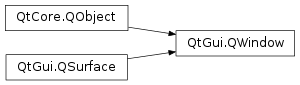

QWindow¶
Inherited by: QtDataVisualization.QAbstract3DGraph, QtDataVisualization.Q3DSurface, QtDataVisualization.Q3DBars, QtDataVisualization.Q3DScatter, Qt3DExtras.Qt3DWindow, QQuickWindow, QQuickView
Synopsis¶
Functions¶
- def
baseSize() - def
contentOrientation() - def
create() - def
cursor() - def
destroy() - def
devicePixelRatio() - def
filePath() - def
flags() - def
frameGeometry() - def
frameMargins() - def
framePosition() - def
geometry() - def
height() - def
icon() - def
isActive() - def
isAncestorOf(child[, mode=IncludeTransients]) - def
isExposed() - def
isModal() - def
isTopLevel() - def
isVisible() - def
mapFromGlobal(pos) - def
mapToGlobal(pos) - def
mask() - def
maximumHeight() - def
maximumSize() - def
maximumWidth() - def
minimumHeight() - def
minimumSize() - def
minimumWidth() - def
modality() - def
opacity() - def
parent(mode) - def
position() - def
reportContentOrientationChange(orientation) - def
requestedFormat() - def
resize(newSize) - def
resize(w, h) - def
screen() - def
setBaseSize(size) - def
setCursor(arg__1) - def
setFilePath(filePath) - def
setFlag(arg__1[, on=true]) - def
setFlags(flags) - def
setFormat(format) - def
setFramePosition(point) - def
setIcon(icon) - def
setKeyboardGrabEnabled(grab) - def
setMask(region) - def
setMaximumSize(size) - def
setMinimumSize(size) - def
setModality(modality) - def
setMouseGrabEnabled(grab) - def
setOpacity(level) - def
setParent(parent) - def
setPosition(posx, posy) - def
setPosition(pt) - def
setScreen(screen) - def
setSizeIncrement(size) - def
setSurfaceType(surfaceType) - def
setTransientParent(parent) - def
setVisibility(v) - def
setWindowState(state) - def
setWindowStates(states) - def
sizeIncrement() - def
title() - def
transientParent() - def
type() - def
unsetCursor() - def
visibility() - def
width() - def
winId() - def
windowState() - def
windowStates() - def
x() - def
y()
Virtual functions¶
- def
accessibleRoot() - def
exposeEvent(arg__1) - def
focusInEvent(arg__1) - def
focusObject() - def
focusOutEvent(arg__1) - def
hideEvent(arg__1) - def
keyPressEvent(arg__1) - def
keyReleaseEvent(arg__1) - def
mouseDoubleClickEvent(arg__1) - def
mouseMoveEvent(arg__1) - def
mousePressEvent(arg__1) - def
mouseReleaseEvent(arg__1) - def
moveEvent(arg__1) - def
resizeEvent(arg__1) - def
showEvent(arg__1) - def
tabletEvent(arg__1) - def
touchEvent(arg__1) - def
wheelEvent(arg__1)
Slots¶
- def
alert(msec) - def
close() - def
hide() - def
lower() - def
raise() - def
requestActivate() - def
requestUpdate() - def
setGeometry(posx, posy, w, h) - def
setGeometry(rect) - def
setHeight(arg) - def
setMaximumHeight(h) - def
setMaximumWidth(w) - def
setMinimumHeight(h) - def
setMinimumWidth(w) - def
setTitle(arg__1) - def
setVisible(visible) - def
setWidth(arg) - def
setX(arg) - def
setY(arg) - def
show() - def
showFullScreen() - def
showMaximized() - def
showMinimized() - def
showNormal()
Signals¶
- def
activeChanged() - def
contentOrientationChanged(orientation) - def
focusObjectChanged(object) - def
heightChanged(arg) - def
maximumHeightChanged(arg) - def
maximumWidthChanged(arg) - def
minimumHeightChanged(arg) - def
minimumWidthChanged(arg) - def
modalityChanged(modality) - def
opacityChanged(opacity) - def
screenChanged(screen) - def
visibilityChanged(visibility) - def
visibleChanged(arg) - def
widthChanged(arg) - def
windowStateChanged(windowState) - def
windowTitleChanged(title) - def
xChanged(arg) - def
yChanged(arg)
Detailed Description¶
The
PySide2.QtGui.QWindowclass represents a window in the underlying windowing system.A window that is supplied a parent becomes a native child window of their parent window.
An application will typically use
PySide2.QtWidgets.QWidgetorPySide2.QtQuick.QQuickViewfor its UI, and notPySide2.QtGui.QWindowdirectly. Still, it is possible to render directly to aPySide2.QtGui.QWindowwithPySide2.QtGui.QBackingStoreorPySide2.QtGui.QOpenGLContext, when wanting to keep dependencies to a minimum or when wanting to use OpenGL directly. The Raster Window Example and OpenGL Window Example are useful reference examples for how to render to aPySide2.QtGui.QWindowusing either approach.
Resource Management¶
Windows can potentially use a lot of memory. A usual measurement is width times height times color depth. A window might also include multiple buffers to support double and triple buffering, as well as depth and stencil buffers. To release a window’s memory resources, call thePySide2.QtGui.QWindow.destroy()function.
Content Orientation¶
PySide2.QtGui.QWindowhasPySide2.QtGui.QWindow.reportContentOrientationChange()that can be used to specify the layout of the window contents in relation to the screen. The content orientation is simply a hint to the windowing system about which orientation the window contents are in. It’s useful when you wish to keep the same window size, but rotate the contents instead, especially when doing rotation animations between different orientations. The windowing system might use this value to determine the layout of system popups or dialogs.
Visibility and Windowing System Exposure¶
By default, the window is not visible, and you must call
PySide2.QtGui.QWindow.setVisible()(true), orPySide2.QtGui.QWindow.show()or similar to make it visible. To make a window hidden again, callPySide2.QtGui.QWindow.setVisible()(false) orPySide2.QtGui.QWindow.hide(). The visible property describes the state the application wants the window to be in. Depending on the underlying system, a visible window might still not be shown on the screen. It could, for instance, be covered by other opaque windows or moved outside the physical area of the screen. On windowing systems that have exposure notifications, thePySide2.QtGui.QWindow.isExposed()accessor describes whether the window should be treated as directly visible on screen. ThePySide2.QtGui.QWindow.exposeEvent()function is called whenever the windows exposure in the windowing system changes. On windowing systems that do not make this information visible to the application,PySide2.QtGui.QWindow.isExposed()will simply return the same value asPySide2.QtGui.QWindow.isVisible().
QWindow.Visibilityqueried throughPySide2.QtGui.QWindow.visibility()is a convenience API combining the functions of visible() andPySide2.QtGui.QWindow.windowStates().
Rendering¶
There are two Qt APIs that can be used to render content into a window,
PySide2.QtGui.QBackingStorefor rendering with aPySide2.QtGui.QPainterand flushing the contents to a window with typeQSurface.RasterSurface, andPySide2.QtGui.QOpenGLContextfor rendering with OpenGL to a window with typeQSurface.OpenGLSurface.The application can start rendering as soon as
PySide2.QtGui.QWindow.isExposed()returnstrue, and can keep rendering until itPySide2.QtGui.QWindow.isExposed()returnsfalse. To find out whenPySide2.QtGui.QWindow.isExposed()changes, reimplementPySide2.QtGui.QWindow.exposeEvent(). The window will always get a resize event before the first expose event.
Initial Geometry¶
If the window’s width and height are left uninitialized, the window will get a reasonable default geometry from the platform window. If the position is left uninitialized, then the platform window will allow the windowing system to position the window. For example on X11, the window manager usually does some kind of smart positioning to try to avoid having new windows completely obscure existing windows. HoweverPySide2.QtGui.QWindow.setGeometry()initializes both the position and the size, so if you want a fixed size but an automatic position, you should callPySide2.QtGui.QWindow.resize()orPySide2.QtGui.QWindow.setWidth()andPySide2.QtGui.QWindow.setHeight()instead.
-
class
PySide2.QtGui.QWindow([screen=nullptr])¶ -
class
PySide2.QtGui.QWindow(parent) Parameters: - screen –
PySide2.QtGui.QScreen - parent –
PySide2.QtGui.QWindow
Creates a window as a top level on the
targetScreen.The window is not shown until
PySide2.QtGui.QWindow.setVisible()(true),PySide2.QtGui.QWindow.show(), or similar is called.See also
Creates a window as a child of the given
parentwindow.The window will be embedded inside the parent window, its coordinates relative to the parent.
The screen is inherited from the parent.
See also
- screen –
-
PySide2.QtGui.QWindow.Visibility¶ This enum describes what part of the screen the window occupies or should occupy.
Constant Description QWindow.Windowed The window occupies part of the screen, but not necessarily the entire screen. This state will occur only on windowing systems which support showing multiple windows simultaneously. In this state it is possible for the user to move and resize the window manually, if WindowFlags permit it and if it is supported by the windowing system. QWindow.Minimized The window is reduced to an entry or icon on the task bar, dock, task list or desktop, depending on how the windowing system handles minimized windows. QWindow.Maximized The window occupies one entire screen, and the titlebar is still visible. On most windowing systems this is the state achieved by clicking the maximize button on the toolbar. QWindow.FullScreen The window occupies one entire screen, is not resizable, and there is no titlebar. On some platforms which do not support showing multiple simultaneous windows, this can be the usual visibility when the window is not hidden. QWindow.AutomaticVisibility This means to give the window a default visible state, which might be fullscreen or windowed depending on the platform. It can be given as a parameter to PySide2.QtGui.QWindow.setVisibility()but will never be read back from the visibility accessor.QWindow.Hidden The window is not visible in any way, however it may remember a latent visibility which can be restored by setting .
-
PySide2.QtGui.QWindow.AncestorMode¶ This enum is used to control whether or not transient parents should be considered ancestors.
Constant Description QWindow.ExcludeTransients Transient parents are not considered ancestors. QWindow.IncludeTransients Transient parents are considered ancestors.
-
PySide2.QtGui.QWindow.accessibleRoot()¶ Return type: PySide2.QtGui.QAccessibleInterfaceReturns the accessibility interface for the object that the window represents
See also
PySide2.QtGui.QAccessible
-
PySide2.QtGui.QWindow.activeChanged()¶
-
PySide2.QtGui.QWindow.alert(msec)¶ Parameters: msec – PySide2.QtCore.intCauses an alert to be shown for
msecmiliseconds. Ifmsecis0(the default), then the alert is shown indefinitely until the window becomes active again. This function has no effect on an active window.In alert state, the window indicates that it demands attention, for example by flashing or bouncing the taskbar entry.
-
PySide2.QtGui.QWindow.baseSize()¶ Return type: PySide2.QtCore.QSizeReturns the base size of the window.
See also
-
PySide2.QtGui.QWindow.close()¶ Return type: PySide2.QtCore.boolClose the window.
This closes the window, effectively calling
PySide2.QtGui.QWindow.destroy(), and potentially quitting the application. Returnstrueon success, false if it has a parent window (in which case the top level window should be closed instead).
-
PySide2.QtGui.QWindow.contentOrientation()¶ Return type: PySide2.QtCore.Qt.ScreenOrientation
-
PySide2.QtGui.QWindow.contentOrientationChanged(orientation)¶ Parameters: orientation – PySide2.QtCore.Qt.ScreenOrientation
-
PySide2.QtGui.QWindow.create()¶ Allocates the platform resources associated with the window.
It is at this point that the surface format set using
PySide2.QtGui.QWindow.setFormat()gets resolved into an actual native surface. However, the window remains hidden untilPySide2.QtGui.QWindow.setVisible()is called.Note that it is not usually necessary to call this function directly, as it will be implicitly called by
PySide2.QtGui.QWindow.show(),PySide2.QtGui.QWindow.setVisible(), and other functions that require access to the platform resources.Call
PySide2.QtGui.QWindow.destroy()to free the platform resources if necessary.See also
-
PySide2.QtGui.QWindow.cursor()¶ Return type: PySide2.QtGui.QCursorthe cursor shape for this window
-
PySide2.QtGui.QWindow.destroy()¶ Releases the native platform resources associated with this window.
See also
-
PySide2.QtGui.QWindow.devicePixelRatio()¶ Return type: PySide2.QtCore.qrealReturns the ratio between physical pixels and device-independent pixels for the window. This value is dependent on the screen the window is on, and may change when the window is moved.
Common values are 1.0 on normal displays and 2.0 on Apple “retina” displays.
Note
For windows not backed by a platform window, meaning that
PySide2.QtGui.QWindow.create()was not called, the function will fall back to the associatedPySide2.QtGui.QScreen‘s device pixel ratio.See also
-
PySide2.QtGui.QWindow.exposeEvent(arg__1)¶ Parameters: arg__1 – PySide2.QtGui.QExposeEventThe expose event (
ev) is sent by the window system whenever the window’s exposure on screen changes.The application can start rendering into the window with
PySide2.QtGui.QBackingStoreandPySide2.QtGui.QOpenGLContextas soon as it gets an such thatPySide2.QtGui.QWindow.isExposed()is true.If the window is moved off screen, is made totally obscured by another window, iconified or similar, this function might be called and the value of
PySide2.QtGui.QWindow.isExposed()might change to false. When this happens, an application should stop its rendering as it is no longer visible to the user.A resize event will always be sent before the expose event the first time a window is shown.
See also
-
PySide2.QtGui.QWindow.filePath()¶ Return type: unicode the file name this window is representing.
See also
-
PySide2.QtGui.QWindow.flags()¶ Return type: PySide2.QtCore.Qt.WindowFlagsSee also
-
PySide2.QtGui.QWindow.focusInEvent(arg__1)¶ Parameters: arg__1 – PySide2.QtGui.QFocusEventOverride this to handle focus in events (
ev).Focus in events are sent when the window receives keyboard focus.
-
PySide2.QtGui.QWindow.focusObject()¶ Return type: PySide2.QtCore.QObjectReturns the
PySide2.QtCore.QObjectthat will be the final receiver of events tied focus, such as key events.
-
PySide2.QtGui.QWindow.focusObjectChanged(object)¶ Parameters: object – PySide2.QtCore.QObject
-
PySide2.QtGui.QWindow.focusOutEvent(arg__1)¶ Parameters: arg__1 – PySide2.QtGui.QFocusEventOverride this to handle focus out events (
ev).Focus out events are sent when the window loses keyboard focus.
See also
-
PySide2.QtGui.QWindow.frameGeometry()¶ Return type: PySide2.QtCore.QRectReturns the geometry of the window, including its window frame.
The geometry is in relation to the virtualGeometry() of its screen.
-
PySide2.QtGui.QWindow.frameMargins()¶ Return type: PySide2.QtCore.QMarginsReturns the window frame margins surrounding the window.
-
PySide2.QtGui.QWindow.framePosition()¶ Return type: PySide2.QtCore.QPointReturns the top left position of the window, including its window frame.
This returns the same value as
PySide2.QtGui.QWindow.frameGeometry(). topLeft() .
-
static
PySide2.QtGui.QWindow.fromWinId(id)¶ Parameters: id – PySide2.QtGui.WIdReturn type: PySide2.QtGui.QWindowCreates a local representation of a window created by another process or by using native libraries below Qt.
Given the handle
idto a native window, this method creates aPySide2.QtGui.QWindowobject which can be used to represent the window when invoking methods likePySide2.QtGui.QWindow.setParent()andPySide2.QtGui.QWindow.setTransientParent().This can be used, on platforms which support it, to embed a
PySide2.QtGui.QWindowinside a native window, or to embed a native window inside aPySide2.QtGui.QWindow.If foreign windows are not supported or embedding the native window failed in the platform plugin, this function returns 0.
Note
The resulting
PySide2.QtGui.QWindowshould not be used to manipulate the underlying native window (besides re-parenting), or to observe state changes of the native window. Any support for these kind of operations is incidental, highly platform dependent and untested.
-
PySide2.QtGui.QWindow.geometry()¶ Return type: PySide2.QtCore.QRectReturns the geometry of the window, excluding its window frame.
The geometry is in relation to the virtualGeometry() of its screen.
-
PySide2.QtGui.QWindow.height()¶ Return type: PySide2.QtCore.intSee also
-
PySide2.QtGui.QWindow.heightChanged(arg)¶ Parameters: arg – PySide2.QtCore.int
-
PySide2.QtGui.QWindow.hide()¶ Hides the window.
Equivalent to calling
PySide2.QtGui.QWindow.setVisible()(false).
-
PySide2.QtGui.QWindow.hideEvent(arg__1)¶ Parameters: arg__1 – PySide2.QtGui.QHideEventOverride this to handle hide events (
ev).The function is called when the window has requested being hidden in the windowing system.
-
PySide2.QtGui.QWindow.icon()¶ Return type: PySide2.QtGui.QIconReturns the window’s icon in the windowing system
See also
-
PySide2.QtGui.QWindow.isActive()¶ Return type: PySide2.QtCore.boolReturns
trueif the window should appear active from a style perspective.This is the case for the window that has input focus as well as windows that are in the same parent / transient parent chain as the focus window.
To get the window that currently has focus, use
QGuiApplication.focusWindow().
-
PySide2.QtGui.QWindow.isAncestorOf(child[, mode=IncludeTransients])¶ Parameters: - child –
PySide2.QtGui.QWindow - mode –
PySide2.QtGui.QWindow.AncestorMode
Return type: PySide2.QtCore.boolReturns
trueif the window is an ancestor of the givenchild. IfmodeisIncludeTransients, then transient parents are also considered ancestors.- child –
-
PySide2.QtGui.QWindow.isExposed()¶ Return type: PySide2.QtCore.boolReturns if this window is exposed in the windowing system.
When the window is not exposed, it is shown by the application but it is still not showing in the windowing system, so the application should minimize rendering and other graphical activities.
An
PySide2.QtGui.QWindow.exposeEvent()is sent every time this value changes.See also
-
PySide2.QtGui.QWindow.isModal()¶ Return type: PySide2.QtCore.boolReturns whether the window is modal.
A modal window prevents other windows from getting any input.
See also
-
PySide2.QtGui.QWindow.isTopLevel()¶ Return type: PySide2.QtCore.boolReturns whether the window is top level, i.e. has no parent window.
-
PySide2.QtGui.QWindow.isVisible()¶ Return type: PySide2.QtCore.bool
-
PySide2.QtGui.QWindow.keyPressEvent(arg__1)¶ Parameters: arg__1 – PySide2.QtGui.QKeyEventOverride this to handle key press events (
ev).
-
PySide2.QtGui.QWindow.keyReleaseEvent(arg__1)¶ Parameters: arg__1 – PySide2.QtGui.QKeyEventOverride this to handle key release events (
ev).
-
PySide2.QtGui.QWindow.lower()¶ Lower the window in the windowing system.
Requests that the window be lowered to appear below other windows.
-
PySide2.QtGui.QWindow.mapFromGlobal(pos)¶ Parameters: pos – PySide2.QtCore.QPointReturn type: PySide2.QtCore.QPointTranslates the global screen coordinate
posto window coordinates.See also
-
PySide2.QtGui.QWindow.mapToGlobal(pos)¶ Parameters: pos – PySide2.QtCore.QPointReturn type: PySide2.QtCore.QPointTranslates the window coordinate
posto global screen coordinates. For example,mapToGlobal(QPoint(0,0))would give the global coordinates of the top-left pixel of the window.
-
PySide2.QtGui.QWindow.mask()¶ Return type: PySide2.QtGui.QRegionReturns the mask set on the window.
The mask is a hint to the windowing system that the application does not want to receive mouse or touch input outside the given region.
See also
-
PySide2.QtGui.QWindow.maximumHeight()¶ Return type: PySide2.QtCore.int
-
PySide2.QtGui.QWindow.maximumHeightChanged(arg)¶ Parameters: arg – PySide2.QtCore.int
-
PySide2.QtGui.QWindow.maximumSize()¶ Return type: PySide2.QtCore.QSizeReturns the maximum size of the window.
-
PySide2.QtGui.QWindow.maximumWidth()¶ Return type: PySide2.QtCore.int
-
PySide2.QtGui.QWindow.maximumWidthChanged(arg)¶ Parameters: arg – PySide2.QtCore.int
-
PySide2.QtGui.QWindow.minimumHeight()¶ Return type: PySide2.QtCore.int
-
PySide2.QtGui.QWindow.minimumHeightChanged(arg)¶ Parameters: arg – PySide2.QtCore.int
-
PySide2.QtGui.QWindow.minimumSize()¶ Return type: PySide2.QtCore.QSizeReturns the minimum size of the window.
-
PySide2.QtGui.QWindow.minimumWidth()¶ Return type: PySide2.QtCore.int
-
PySide2.QtGui.QWindow.minimumWidthChanged(arg)¶ Parameters: arg – PySide2.QtCore.int
-
PySide2.QtGui.QWindow.modality()¶ Return type: PySide2.QtCore.Qt.WindowModalitySee also
-
PySide2.QtGui.QWindow.modalityChanged(modality)¶ Parameters: modality – PySide2.QtCore.Qt.WindowModality
-
PySide2.QtGui.QWindow.mouseDoubleClickEvent(arg__1)¶ Parameters: arg__1 – PySide2.QtGui.QMouseEventOverride this to handle mouse double click events (
ev).
-
PySide2.QtGui.QWindow.mouseMoveEvent(arg__1)¶ Parameters: arg__1 – PySide2.QtGui.QMouseEventOverride this to handle mouse move events (
ev).
-
PySide2.QtGui.QWindow.mousePressEvent(arg__1)¶ Parameters: arg__1 – PySide2.QtGui.QMouseEventOverride this to handle mouse press events (
ev).
-
PySide2.QtGui.QWindow.mouseReleaseEvent(arg__1)¶ Parameters: arg__1 – PySide2.QtGui.QMouseEventOverride this to handle mouse release events (
ev).
-
PySide2.QtGui.QWindow.moveEvent(arg__1)¶ Parameters: arg__1 – PySide2.QtGui.QMoveEventOverride this to handle window move events (
ev).
-
PySide2.QtGui.QWindow.opacity()¶ Return type: PySide2.QtCore.qrealSee also
-
PySide2.QtGui.QWindow.opacityChanged(opacity)¶ Parameters: opacity – PySide2.QtCore.qreal
-
PySide2.QtGui.QWindow.parent(mode)¶ Parameters: mode – PySide2.QtGui.QWindow.AncestorModeReturn type: PySide2.QtGui.QWindowReturns the parent window, if any.
If
modeisIncludeTransients, then the transient parent is returned if there is no parent.A window without a parent is known as a top level window.
See also
-
PySide2.QtGui.QWindow.position()¶ Return type: PySide2.QtCore.QPointReturns the position of the window on the desktop excluding any window frame
See also
-
PySide2.QtGui.QWindow.raise()¶ Raise the window in the windowing system.
Requests that the window be raised to appear above other windows.
-
PySide2.QtGui.QWindow.reportContentOrientationChange(orientation)¶ Parameters: orientation – PySide2.QtCore.Qt.ScreenOrientation
-
PySide2.QtGui.QWindow.requestActivate()¶ Requests the window to be activated, i.e. receive keyboard focus.
See also
PySide2.QtGui.QWindow.isActive()QGuiApplication.focusWindow()QWindowsWindowFunctions.setWindowActivationBehavior()
-
PySide2.QtGui.QWindow.requestUpdate()¶ Schedules a
QEvent.UpdateRequestevent to be delivered to this window.The event is delivered in sync with the display vsync on platforms where this is possible. Otherwise, the event is delivered after a delay of 5 ms. The additional time is there to give the event loop a bit of idle time to gather system events, and can be overridden using the QT_QPA_UPDATE_IDLE_TIME environment variable.
When driving animations, this function should be called once after drawing has completed. Calling this function multiple times will result in a single event being delivered to the window.
Subclasses of
PySide2.QtGui.QWindowshould reimplementPySide2.QtGui.QWindow.event(), intercept the event and call the application’s rendering code, then call the base class implementation.Note
The subclass’ reimplementation of
PySide2.QtGui.QWindow.event()must invoke the base class implementation, unless it is absolutely sure that the event does not need to be handled by the base class. For example, the default implementation of this function relies onQEvent.Timerevents. Filtering them away would therefore break the delivery of the update events.
-
PySide2.QtGui.QWindow.requestedFormat()¶ Return type: PySide2.QtGui.QSurfaceFormatReturns the requested surface format of this window.
If the requested format was not supported by the platform implementation, the will differ from the actual window format.
This is the value set with
PySide2.QtGui.QWindow.setFormat().See also
PySide2.QtGui.QWindow.setFormat()PySide2.QtGui.QWindow.format()
-
PySide2.QtGui.QWindow.resize(w, h)¶ Parameters: - w –
PySide2.QtCore.int - h –
PySide2.QtCore.int
set the size of the window, excluding any window frame, to a
PySide2.QtCore.QSizeconstructed from widthwand heighthSee also
PySide2.QtGui.QWindow.size()PySide2.QtGui.QWindow.geometry()- w –
-
PySide2.QtGui.QWindow.resize(newSize) Parameters: newSize – PySide2.QtCore.QSizeset the size of the window, excluding any window frame, to
newSizeSee also
PySide2.QtGui.QWindow.size()PySide2.QtGui.QWindow.geometry()
-
PySide2.QtGui.QWindow.resizeEvent(arg__1)¶ Parameters: arg__1 – PySide2.QtGui.QResizeEventOverride this to handle resize events (
ev).The resize event is called whenever the window is resized in the windowing system, either directly through the windowing system acknowledging a
PySide2.QtGui.QWindow.setGeometry()orPySide2.QtGui.QWindow.resize()request, or indirectly through the user resizing the window manually.
-
PySide2.QtGui.QWindow.screen()¶ Return type: PySide2.QtGui.QScreenReturns the screen on which the window is shown, or null if there is none.
For child windows, this returns the screen of the corresponding top level window.
-
PySide2.QtGui.QWindow.screenChanged(screen)¶ Parameters: screen – PySide2.QtGui.QScreen
-
PySide2.QtGui.QWindow.setBaseSize(size)¶ Parameters: size – PySide2.QtCore.QSizeSets the base
sizeof the window.The base size is used to calculate a proper window size if the window defines
PySide2.QtGui.QWindow.sizeIncrement().
-
PySide2.QtGui.QWindow.setCursor(arg__1)¶ Parameters: arg__1 – PySide2.QtGui.QCursorset the cursor shape for this window
The mouse
cursorwill assume this shape when it is over this window, unless an override cursor is set. See thelist of predefined cursor objectsfor a range of useful shapes.If no cursor has been set, or after a call to
PySide2.QtGui.QWindow.unsetCursor(), the parent window’s cursor is used.By default, the cursor has the
Qt.ArrowCursorshape.Some underlying window implementations will reset the cursor if it leaves a window even if the mouse is grabbed. If you want to have a cursor set for all windows, even when outside the window, consider
QGuiApplication.setOverrideCursor().
-
PySide2.QtGui.QWindow.setFilePath(filePath)¶ Parameters: filePath – unicode set the file name this window is representing.
The windowing system might use
filePathto display the path of the document this window is representing in the tile bar.See also
-
PySide2.QtGui.QWindow.setFlag(arg__1[, on=true])¶ Parameters: - arg__1 –
PySide2.QtCore.Qt.WindowType - on –
PySide2.QtCore.bool
Sets the window flag
flagon this window ifonis true; otherwise clears the flag.- arg__1 –
-
PySide2.QtGui.QWindow.setFlags(flags)¶ Parameters: flags – PySide2.QtCore.Qt.WindowFlagsSee also
-
PySide2.QtGui.QWindow.setFormat(format)¶ Parameters: format – PySide2.QtGui.QSurfaceFormatSets the window’s surface
format.The format determines properties such as color depth, alpha, depth and stencil buffer size, etc. For example, to give a window a transparent background (provided that the window system supports compositing, and provided that other content in the window does not make it opaque again):
QSurfaceFormat format; format.setAlphaBufferSize(8); window.setFormat(format);
The surface format will be resolved in the
PySide2.QtGui.QWindow.create()function. Calling this function afterPySide2.QtGui.QWindow.create()has been called will not re-resolve the surface format of the native surface.When the format is not explicitly set via this function, the format returned by
QSurfaceFormat.defaultFormat()will be used. This means that when having multiple windows, individual calls to this function can be replaced by one single call toQSurfaceFormat.setDefaultFormat()before creating the first window.See also
PySide2.QtGui.QWindow.format()PySide2.QtGui.QWindow.create()PySide2.QtGui.QWindow.destroy()QSurfaceFormat.setDefaultFormat()
-
PySide2.QtGui.QWindow.setFramePosition(point)¶ Parameters: point – PySide2.QtCore.QPointSets the upper left position of the window (
point) including its window frame.The position is in relation to the virtualGeometry() of its screen.
-
PySide2.QtGui.QWindow.setGeometry(posx, posy, w, h)¶ Parameters: - posx –
PySide2.QtCore.int - posy –
PySide2.QtCore.int - w –
PySide2.QtCore.int - h –
PySide2.QtCore.int
Sets the geometry of the window, excluding its window frame, to a rectangle constructed from
posx,posy,wandh.The geometry is in relation to the virtualGeometry() of its screen.
See also
- posx –
-
PySide2.QtGui.QWindow.setGeometry(rect) Parameters: rect – PySide2.QtCore.QRectSets the geometry of the window, excluding its window frame, to
rect.The geometry is in relation to the virtualGeometry() of its screen.
See also
-
PySide2.QtGui.QWindow.setHeight(arg)¶ Parameters: arg – PySide2.QtCore.intSee also
-
PySide2.QtGui.QWindow.setIcon(icon)¶ Parameters: icon – PySide2.QtGui.QIconSets the window’s
iconin the windowing systemThe window icon might be used by the windowing system for example to decorate the window, and/or in the task switcher.
Note
On macOS , the window title bar icon is meant for windows representing documents, and will only show up if a file path is also set.
-
PySide2.QtGui.QWindow.setKeyboardGrabEnabled(grab)¶ Parameters: grab – PySide2.QtCore.boolReturn type: PySide2.QtCore.boolSets whether keyboard grab should be enabled or not (
grab).If the return value is true, the window receives all key events until (false) is called; other windows get no key events at all. Mouse events are not affected. Use
PySide2.QtGui.QWindow.setMouseGrabEnabled()if you want to grab that.
-
PySide2.QtGui.QWindow.setMask(region)¶ Parameters: region – PySide2.QtGui.QRegionSets the mask of the window.
The mask is a hint to the windowing system that the application does not want to receive mouse or touch input outside the given
region.The window manager may or may not choose to display any areas of the window not included in the mask, thus it is the application’s responsibility to clear to transparent the areas that are not part of the mask.
See also
-
PySide2.QtGui.QWindow.setMaximumHeight(h)¶ Parameters: h – PySide2.QtCore.int
-
PySide2.QtGui.QWindow.setMaximumSize(size)¶ Parameters: size – PySide2.QtCore.QSizeSets the maximum size of the window.
This is a hint to the window manager to prevent resizing above the specified
size.
-
PySide2.QtGui.QWindow.setMaximumWidth(w)¶ Parameters: w – PySide2.QtCore.intSee also
-
PySide2.QtGui.QWindow.setMinimumHeight(h)¶ Parameters: h – PySide2.QtCore.int
-
PySide2.QtGui.QWindow.setMinimumSize(size)¶ Parameters: size – PySide2.QtCore.QSizeSets the minimum size of the window.
This is a hint to the window manager to prevent resizing below the specified
size.
-
PySide2.QtGui.QWindow.setMinimumWidth(w)¶ Parameters: w – PySide2.QtCore.intSee also
-
PySide2.QtGui.QWindow.setModality(modality)¶ Parameters: modality – PySide2.QtCore.Qt.WindowModalitySee also
-
PySide2.QtGui.QWindow.setMouseGrabEnabled(grab)¶ Parameters: grab – PySide2.QtCore.boolReturn type: PySide2.QtCore.boolSets whether mouse grab should be enabled or not (
grab).If the return value is true, the window receives all mouse events until (false) is called; other windows get no mouse events at all. Keyboard events are not affected. Use
PySide2.QtGui.QWindow.setKeyboardGrabEnabled()if you want to grab that.
-
PySide2.QtGui.QWindow.setOpacity(level)¶ Parameters: level – PySide2.QtCore.qrealSee also
-
PySide2.QtGui.QWindow.setParent(parent)¶ Parameters: parent – PySide2.QtGui.QWindowSets the
parentWindow. This will lead to the windowing system managing the clip of the window, so it will be clipped to theparentwindow.Setting
parentto be 0 will make the window become a top level window.If
parentis a window created byPySide2.QtGui.QWindow.fromWinId(), then the current window will be embedded insideparent, if the platform supports it.See also
-
PySide2.QtGui.QWindow.setPosition(pt)¶ Parameters: pt – PySide2.QtCore.QPointset the position of the window on the desktop to
ptThe position is in relation to the virtualGeometry() of its screen.
See also
-
PySide2.QtGui.QWindow.setPosition(posx, posy) Parameters: - posx –
PySide2.QtCore.int - posy –
PySide2.QtCore.int
set the position of the window on the desktop to
posx,posyThe position is in relation to the virtualGeometry() of its screen.
See also
- posx –
-
PySide2.QtGui.QWindow.setScreen(screen)¶ Parameters: screen – PySide2.QtGui.QScreenSets the screen on which the window should be shown.
If the window has been created, it will be recreated on the
newScreen.Note
If the screen is part of a virtual desktop of multiple screens, the window will not move automatically to
newScreen. To place the window relative to the screen, use the screen’s topLeft() position.This function only works for top level windows.
-
PySide2.QtGui.QWindow.setSizeIncrement(size)¶ Parameters: size – PySide2.QtCore.QSizeSets the size increment (
size) of the window.When the user resizes the window, the size will move in steps of
PySide2.QtGui.QWindow.sizeIncrement().PySide2.QtGui.QWindow.width()pixels horizontally andPySide2.QtGui.QWindow.sizeIncrement().PySide2.QtGui.QWindow.height()pixels vertically, withPySide2.QtGui.QWindow.baseSize()as the basis.By default, this property contains a size with zero width and height.
The windowing system might not support size increments.
-
PySide2.QtGui.QWindow.setSurfaceType(surfaceType)¶ Parameters: surfaceType – PySide2.QtGui.QSurface.SurfaceTypeSets the
surfaceTypeof the window.Specifies whether the window is meant for raster rendering with
PySide2.QtGui.QBackingStore, or OpenGL rendering withPySide2.QtGui.QOpenGLContext.The
PySide2.QtGui.QWindow.surfaceType()will be used when the native surface is created in thePySide2.QtGui.QWindow.create()function. Calling this function after the native surface has been created requires callingPySide2.QtGui.QWindow.destroy()andPySide2.QtGui.QWindow.create()to release the old native surface and create a new one.See also
PySide2.QtGui.QWindow.surfaceType()PySide2.QtGui.QBackingStorePySide2.QtGui.QOpenGLContextPySide2.QtGui.QWindow.create()PySide2.QtGui.QWindow.destroy()
-
PySide2.QtGui.QWindow.setTitle(arg__1)¶ Parameters: arg__1 – unicode See also
-
PySide2.QtGui.QWindow.setTransientParent(parent)¶ Parameters: parent – PySide2.QtGui.QWindowSets the transient
parentThis is a hint to the window manager that this window is a dialog or pop-up on behalf of the given window.
In order to cause the window to be centered above its transient parent by default, depending on the window manager, it may also be necessary to call
PySide2.QtGui.QWindow.setFlags()with a suitableQt.WindowType(such asQt::Dialog).
-
PySide2.QtGui.QWindow.setVisibility(v)¶ Parameters: v – PySide2.QtGui.QWindow.VisibilitySee also
-
PySide2.QtGui.QWindow.setVisible(visible)¶ Parameters: visible – PySide2.QtCore.boolSee also
-
PySide2.QtGui.QWindow.setWidth(arg)¶ Parameters: arg – PySide2.QtCore.intSee also
-
PySide2.QtGui.QWindow.setWindowState(state)¶ Parameters: state – PySide2.QtCore.Qt.WindowStateset the screen-occupation state of the window
The window
staterepresents whether the window appears in the windowing system as maximized, minimized, fullscreen, or normal.The enum value
Qt.WindowActiveis not an accepted parameter.
-
PySide2.QtGui.QWindow.setWindowStates(states)¶ Parameters: states – PySide2.QtCore.Qt.WindowStatesset the screen-occupation state of the window
The window
staterepresents whether the window appears in the windowing system as maximized, minimized and/or fullscreen.The window can be in a combination of several states. For example, if the window is both minimized and maximized, the window will appear minimized, but clicking on the task bar entry will restore it to the maximized state.
The enum value
Qt.WindowActiveshould not be set.
-
PySide2.QtGui.QWindow.setX(arg)¶ Parameters: arg – PySide2.QtCore.intSee also
-
PySide2.QtGui.QWindow.setY(arg)¶ Parameters: arg – PySide2.QtCore.intSee also
-
PySide2.QtGui.QWindow.show()¶ Shows the window.
This is equivalent to calling
PySide2.QtGui.QWindow.showFullScreen(),PySide2.QtGui.QWindow.showMaximized(), orPySide2.QtGui.QWindow.showNormal(), depending on the platform’s default behavior for the window type and flags.
-
PySide2.QtGui.QWindow.showEvent(arg__1)¶ Parameters: arg__1 – PySide2.QtGui.QShowEventOverride this to handle show events (
ev).The function is called when the window has requested becoming visible.
If the window is successfully shown by the windowing system, this will be followed by a resize and an expose event.
-
PySide2.QtGui.QWindow.showFullScreen()¶ Shows the window as fullscreen.
Equivalent to calling
PySide2.QtGui.QWindow.setWindowStates()(Qt.WindowFullScreen) and thenPySide2.QtGui.QWindow.setVisible()(true).
-
PySide2.QtGui.QWindow.showMaximized()¶ Shows the window as maximized.
Equivalent to calling
PySide2.QtGui.QWindow.setWindowStates()(Qt.WindowMaximized) and thenPySide2.QtGui.QWindow.setVisible()(true).
-
PySide2.QtGui.QWindow.showMinimized()¶ Shows the window as minimized.
Equivalent to calling
PySide2.QtGui.QWindow.setWindowStates()(Qt.WindowMinimized) and thenPySide2.QtGui.QWindow.setVisible()(true).
-
PySide2.QtGui.QWindow.showNormal()¶ Shows the window as normal, i.e. neither maximized, minimized, nor fullscreen.
Equivalent to calling
PySide2.QtGui.QWindow.setWindowStates()(Qt.WindowNoState) and thenPySide2.QtGui.QWindow.setVisible()(true).
-
PySide2.QtGui.QWindow.sizeIncrement()¶ Return type: PySide2.QtCore.QSizeReturns the size increment of the window.
-
PySide2.QtGui.QWindow.tabletEvent(arg__1)¶ Parameters: arg__1 – PySide2.QtGui.QTabletEventOverride this to handle tablet press, move, and release events (
ev).Proximity enter and leave events are not sent to windows, they are delivered to the application instance.
-
PySide2.QtGui.QWindow.title()¶ Return type: unicode See also
-
PySide2.QtGui.QWindow.touchEvent(arg__1)¶ Parameters: arg__1 – PySide2.QtGui.QTouchEventOverride this to handle touch events (
ev).
-
PySide2.QtGui.QWindow.transientParent()¶ Return type: PySide2.QtGui.QWindowReturns the transient parent of the window.
-
PySide2.QtGui.QWindow.type()¶ Return type: PySide2.QtCore.Qt.WindowTypeReturns the type of the window.
This returns the part of the window flags that represents whether the window is a dialog, tooltip, popup, regular window, etc.
-
PySide2.QtGui.QWindow.unsetCursor()¶ Restores the default arrow cursor for this window.
-
PySide2.QtGui.QWindow.visibility()¶ Return type: PySide2.QtGui.QWindow.Visibility
-
PySide2.QtGui.QWindow.visibilityChanged(visibility)¶ Parameters: visibility – PySide2.QtGui.QWindow.Visibility
-
PySide2.QtGui.QWindow.visibleChanged(arg)¶ Parameters: arg – PySide2.QtCore.bool
-
PySide2.QtGui.QWindow.wheelEvent(arg__1)¶ Parameters: arg__1 – PySide2.QtGui.QWheelEventOverride this to handle mouse wheel or other wheel events (
ev).
-
PySide2.QtGui.QWindow.width()¶ Return type: PySide2.QtCore.intSee also
-
PySide2.QtGui.QWindow.widthChanged(arg)¶ Parameters: arg – PySide2.QtCore.int
-
PySide2.QtGui.QWindow.winId()¶ Return type: PySide2.QtGui.WIdReturns the window’s platform id.
For platforms where this id might be useful, the value returned will uniquely represent the window inside the corresponding screen.
See also
-
PySide2.QtGui.QWindow.windowState()¶ Return type: PySide2.QtCore.Qt.WindowStatethe screen-occupation state of the window
-
PySide2.QtGui.QWindow.windowStateChanged(windowState)¶ Parameters: windowState – PySide2.QtCore.Qt.WindowState
-
PySide2.QtGui.QWindow.windowStates()¶ Return type: PySide2.QtCore.Qt.WindowStatesthe screen-occupation state of the window
The window can be in a combination of several states. For example, if the window is both minimized and maximized, the window will appear minimized, but clicking on the task bar entry will restore it to the maximized state.
-
PySide2.QtGui.QWindow.windowTitleChanged(title)¶ Parameters: title – unicode
-
PySide2.QtGui.QWindow.x()¶ Return type: PySide2.QtCore.intSee also
-
PySide2.QtGui.QWindow.xChanged(arg)¶ Parameters: arg – PySide2.QtCore.int
-
PySide2.QtGui.QWindow.y()¶ Return type: PySide2.QtCore.intSee also
-
PySide2.QtGui.QWindow.yChanged(arg)¶ Parameters: arg – PySide2.QtCore.int
© 2018 The Qt Company Ltd. Documentation contributions included herein are the copyrights of their respective owners. The documentation provided herein is licensed under the terms of the GNU Free Documentation License version 1.3 as published by the Free Software Foundation. Qt and respective logos are trademarks of The Qt Company Ltd. in Finland and/or other countries worldwide. All other trademarks are property of their respective owners.